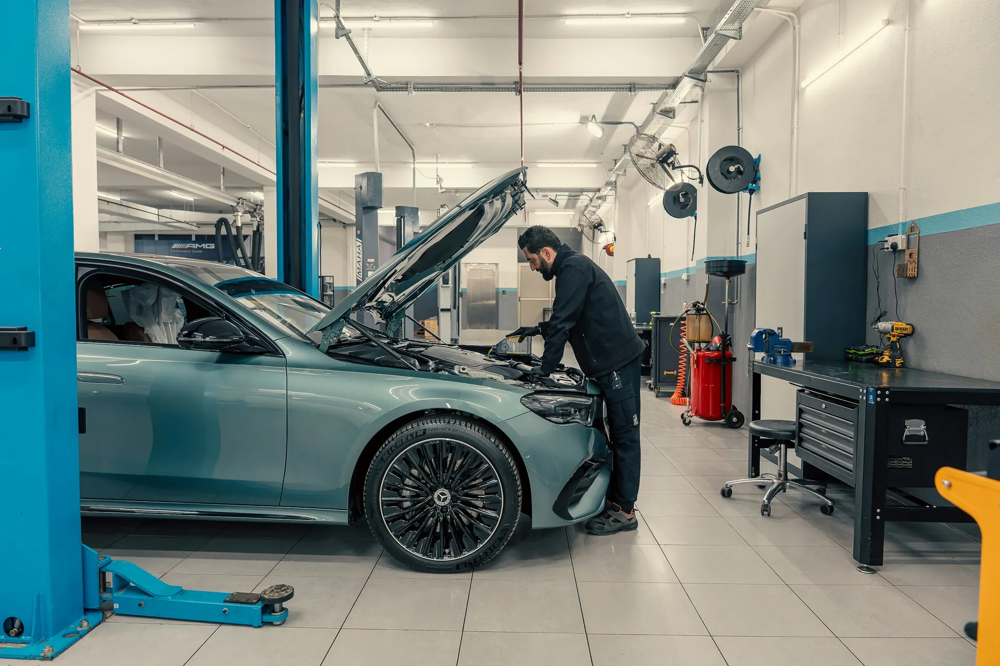
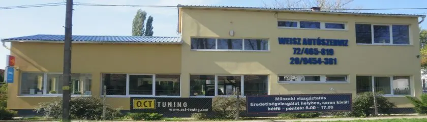

Márkafüggetlen javítás és szerviz
Meghibásodás javítása és rendszeres karbantartás, bármilyen márkájú autón.

Javítás, karbantartás és műszaki vizsgáztatás egy helyen – az ezzel járó ügyintézést is magunkra vállaljuk.
Válassza ki, miért jönne: megmutatjuk, mit hozzon magával, és rögtön kérhet időpontot.
Helyben vizsgáztatjuk az autót. Ha a vizsga előtt javítás kell, azt is itt elvégezzük, így nem kell két helyre vinnie.
„Célunk a hozzánk érkező gépjármű tulajdonosok minden járművükkel kapcsolatos igényének kielégítése!”
Meghibásodás javítása és rendszeres karbantartás, bármilyen márkájú autón.
Helyben, a javítással egy épületben.
Helyben, soron kívül.
Elektromos hibák felderítése és javítása.
Sérült műanyag karosszériaelemek, például lökhárítók javítása.
A javításhoz szükséges alkatrészt mi szerezzük be.
A gépjárművek bármely problémáival kapcsolatos ügyek intézését, az adminisztrációs és egyéb felmerülő részletek lebonyolítását is magunkra vállaljuk. Ezzel Ön pénzt, időt és energiát takaríthat meg.
Weisz Autószerviz, Pécsvárad
46 értékelés a Google-on
Ajánlom mindenki számára a szervizt.
– egy ügyfél, aki alapos átnézést és javítást kapott

Pécsváradon, az Erzsébeti út 8. alatt, a 6-os főút közelében.
| Hétfő | 8–12, 13–17 |
|---|---|
| Kedd | 8–12, 13–17 |
| Szerda | 8–12, 13–17 |
| Csütörtök | 8–12, 13–17 |
| Péntek | 8–12, 13–17 |
| Szombat–vasárnap | Zárva |
Márkafüggetlen szerviz vagyunk: bármilyen márkájú személyautó javítását, karbantartását és műszaki vizsgáztatását vállaljuk.
Igen. A javítást, a karbantartást és a műszaki vizsgáztatást is helyben végezzük, az ezzel járó ügyintézést pedig magunkra vállaljuk.
Az eredetiségvizsgálatot helyben, soron kívül végezzük. Indulás előtt érdemes telefonálni: 06 72 465 819.
Hétfőtől péntekig 8 és 12, valamint 13 és 17 óra között. Hétvégén zárva vagyunk.
Pécsváradon, az Erzsébeti út 8. alatt, a 6-os főút közelében.